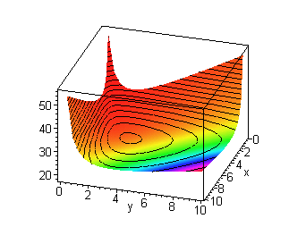

Lyness' Equation has the form:
xn+1 = (a + xn )/ xn-1 where the parameter a > 0, x n-1 > 0, x0 > 0.
The invariant of this equation is:
I(xn , xn-1 ) = (1+1/xn )(1+1/xn-1 )(a+xn +xn-1 ) The Lyness equation has the equilibrium value:
p=(1±(1+ 4a)1/2)/2
THEOREM (Discrete version of the Dirichlet's theorem). Consider the difference equation
where xn is in Rk and f: D® D is continuous, where D Ì Rk. Suppose that I:Rk® R is a continuous invariant that is I(f(x)) = I(x) for every x Î D. If I attains an isolated local minimum or maximum value at the equilibrium (fixed) point p of this system, then there exists a Liapunov function equal to ±(I(x) - I(p)) and so the equilibrium p is stable.
xn+1 = f( xn)
By using the above theorem, the Liapunov function, V(x,y) for this equation is found to be given by:
V(x, y)= I(x, y)-I(p, p)= I(x, y) - (p+1)3 /p
V(x, y)=(1+1/x)(1+1/y)(a+x+y)-(p+1)3 /p
3-d Plot of the Invariant of Lyness' Equation

View an animated version of the above graph.
For more information about Lyness' Equation:
Sir Christopher Zeeman
- Geometric Unfolding of a Difference Equation a lecture by:
"Technical skill is mastery of complexity while creativity is mastery of simplicity."
Catastrophe Theory, 1977.Click here to go to Home Page for Difference Equations at URI